Practica-IAW-3.1: Instalación de Moodle con Ansible
Estructura de la Práctica
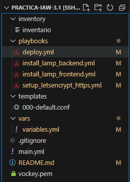
Objetivo de la Práctica
El objetivo de esta práctica es automatizar la instalación y configuración de Moodle en AWS utilizando Ansible. Para ello, se desplegará una arquitectura de dos niveles, con:
- Un servidor frontend: Donde llevaremos a cabo la instalación de Apache, PHP y Moodle.
- Un servidor backend: Incluyendo la instalación de MySQL cómo base de datos.
- Un nodo de control (dónde se ejecuta Ansible): Desde aquí se automatizará la instalación y configuración de las instancias EC2.
Recordatorio de cambio de la dirección IP para actualizar el nombre de dominio nuestra página web
[!IMPORTANT]
Tal y cómo hemos visto en las prácticas anteriores, hemos creado un dominio para nuestra página web, de forma que, esté asociada a la dirección IP de nuestra máquina, por lo que nos dirigimos a la página NO-IP y actualizamos la dirección IP, el nombre no se permite cambiar, por lo que en este caso solo cambiaremos la dirección IP.
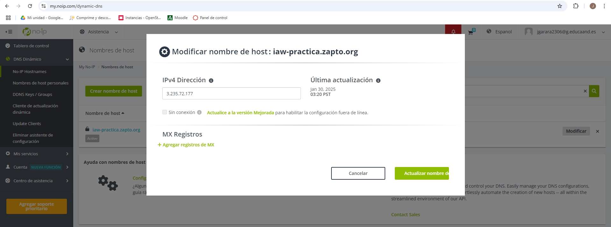
Proceso de instalación y configuración de Moodle
install_lamp_backend.yaml: Este archivo playbook de Ansible tiene como objetivo configurar y desplegar un servidor MySQL en la instancia backend de AWS, automatizando su instalación, configuración y la creación de la base de datos para Moodle.
Contenido del archivo:
- name: Configuración del Servidor de Base de Datos (Backend)
hosts: backend
become: yes
vars_files:
- ../vars/variables.yml
tasks:
- name: Actualizar paquetes
apt:
update_cache: yes
upgrade: yes
- name: Instalamos MySQL Server
apt:
name: mysql-server
state: present
- name: Habilitamos el servicio MySQL
service:
name: mysql
state: started
enabled: yes
- name: Instalamos el módulo pymysql
apt:
name: python3-pymysql
state: present
- name: Eliminamos la base de datos por si existe
mysql_db:
name: "{{ db.name }}"
state: absent
login_unix_socket: /var/run/mysqld/mysqld.sock
- name: Creamos la base de datos para Moodle
mysql_db:
name: "{{ db.name }}"
state: present
login_unix_socket: /var/run/mysqld/mysqld.sock
- name: Creamos un usuario de la base de datos para Moodle
mysql_user:
name: "{{ db.user }}"
password: "{{ db.password }}"
priv: "{{ db.name }}.*:ALL"
host: "{{ db.frontend_private_ip }}"
state: present
login_unix_socket: /var/run/mysqld/mysqld.sock
- name: Permitimos conexiones remotas a MySQL
lineinfile:
path: /etc/mysql/mysql.conf.d/mysqld.cnf
regexp: '^bind-address'
line: 'bind-address = 0.0.0.0'
- name: Reiniciamos MySQL
service:
name: mysql
state: restarted
install_lamp_frontend.yaml: El objetivo es configurar un servidor web Apache con PHP en una instancia EC2 de AWS, que actuará como capa frontend de la arquitectura de dos niveles para la instalación de Moodle.
Contenido del archivo:
- name: Configuración del Servidor Web (Frontend)
hosts: frontend
become: yes
tasks:
- name: Actualizamos paquetes
apt:
update_cache: yes
upgrade: yes
- name: Instalamos el servidor web Apache
apt:
name: apache2
state: present
- name: Instalamos PHP así cómo sus dependencias
apt:
name:
- php
- php-mysql
- libapache2-mod-php
- php-xml
- php-curl
- php-mbstring
- php-zip
- php-gd
- unzip
- php-intl
- php-soap
- php-ldap
- php-opcache
- php-cli
state: present
- name: Creamos el directorio de datos de moodle
file:
path: /var/www/moodledata
state: directory
owner: www-data
group: www-data
mode: '0755'
- name: Modificamos el valor max_input_vars de PHP
replace:
path: /etc/php/8.3/apache2/php.ini
regexp: '^;max_input_vars\s=.*'
replace: max_input_vars = 5000
- name: Modificamos el valor max_input_vars de PHP
replace:
path: /etc/php/8.3/cli/php.ini
regexp: '^;max_input_vars\s=.*'
replace: max_input_vars = 5000
- name: Modificamos el valor memory_limit de PHP
replace:
path: /etc/php/8.3/apache2/php.ini
regexp: '^;memory_limit\s=.*'
replace: memory_limit = 256M
- name: Modificamos el valor memory_limit de PHP CLI
replace:
path: /etc/php/8.3/cli/php.ini
regexp: '^;memory_limits\s=.*'
replace: memory_limit = 256M
- name: Modificamos el valor post_max_size de PHP
replace:
path: /etc/php/8.3/apache2/php.ini
regexp: '^;post_max_size\s=.*'
replace: post_max_size = 128M
- name: Modificamos el valor post_max_size de PHP
replace:
path: /etc/php/8.3/cli/php.ini
regexp: '^;post_max_size\s=.*'
replace: post_max_size = 128M
- name: Modificamos el valor upload_max_filesize de PHP
replace:
path: /etc/php/8.3/apache2/php.ini
regexp: '^;upload_max_filesize\s=.*'
replace: upload_max_filesize = 128M
- name: Modificamos el valor upload_max_filesize de PHP
replace:
path: /etc/php/8.3/cli/php.ini
regexp: '^;upload_max_filesize\s=.*'
replace: upload_max_filesize = 128M
- name: Modificamos el valor max_execution_time de PHP
replace:
path: /etc/php/8.3/apache2/php.ini
regexp: '^;max_execution_time\s=.*'
replace: 'max_execution_time = 300'
- name: Modificamos el valor max_execution_time de PHP CLI
replace:
path: /etc/php/8.3/cli/php.ini
regexp: '^;max_execution_time\s=.*'
replace: 'max_execution_time = 300'
- name: Copiamos el archivo de configuración de Apache
copy:
src: ../templates/000-default.conf
dest: /etc/apache2/sites-available/
mode: 0755
- name: Habilitamos el módulo rewrite de Apache
apache2_module:
name: rewrite
state: present
- name: Reiniciamos Apache
service:
name: apache2
state: restarted
deploy.yaml: Tiene como objetivo principal la instalación y configuración automática de Moodle en un servidor frontend utilizando Ansible.
Contenido del archivo:
- name: Instalación de Moodle
hosts: frontend
become: yes
vars_files:
- ../vars/variables.yml
tasks:
- name: Eliminamos archivos previos en el directorio de moodle
file:
path: /var/www/html/*
state: absent
- name: Descargamos Moodle
get_url:
url: "https://github.com/moodle/moodle/archive/refs/tags/v4.3.1.zip "
dest: "/tmp"
- name: Instalamos el descomprimidor unzip
apt:
name: unzip
state: present
- name: Extraemos Moodle
unarchive:
src: /tmp/moodle-4.3.1.zip
dest: /tmp
remote_src: yes
- name: Copiamos moodle a su directorio /var/www/html
copy:
src: /tmp/moodle-4.3.1/
dest: /var/www/html
remote_src: true
force: yes
- name: Configuramos permisos de Moodle
file:
path: /var/www/html
owner: www-data
group: www-data
recurse: yes
mode: "0755"
loop:
- /var/www/html
- /var/www/html/moodledata
- name: Instalamos Moodle desde CLI
command:
sudo -u www-data php /var/www/html/admin/cli/install.php \
--wwwroot={{ moodle.wwwroot }} \
--dataroot={{ moodle.data_directory }} \
--dbtype={{ moodle.type }} \
--dbhost={{ db.host }} \
--dbname={{ db.name }} \
--dbuser={{ db.user }} \
--dbpass={{ db.password }} \
--fullname="{{ moodle.fullname }}" \
--shortname="{{ moodle.shortname }}" \
--summary="{{ moodle.summary }}" \
--adminuser={{ moodle.admin_user }} \
--adminpass={{ moodle.admin_pass }} \
--adminemail={{ moodle.admin_email }} \
--non-interactive \
--agree-license
args:
chdir: /var/www/html
- name: Reiniciamos Apache
service:
name: apache2
state: restarted
Y por último, configuraremos letsencrypt para que nuestra página web sea HTTPS.
deploy.yaml: Tiene como objetivo principal la instalación y configuración automática de Moodle en un servidor frontend utilizando Ansible.
Contenido del archivo:
- name: Configuración de HTTPS con Let's Encrypt
hosts: frontend
become: yes
vars_files:
- ../vars/variables.yml
tasks:
- name: Desinstalamos instalaciones previas de Certbot
apt:
name: certbot
state: absent
- name: Instalamos Certbot con el gestor de paquetes snap
snap:
name: certbot
classic: yes
state: present
- name: Solicitamos y configuramos el certificado SSL/TLS a Let's Encrypt con certbot
command:
certbot --apache \
-m {{ certbot.email }} \
--agree-tos \
--no-eff-email \
--non-interactive \
-d {{ certbot.domain }}
- name: Reiniciamos Apache para aplicar los cambios
service:
name: apache2
state: restarted
[!NOTE]
Añadiremos las líneas "ServerSignature Off" y "ServerTokens Prod" en el archivo 000-default.conf para mejorar la seguridad de nuestro servidor apache.
Explicado el motivo, el archivo 000-default.conf quedará de la siguiente manera:
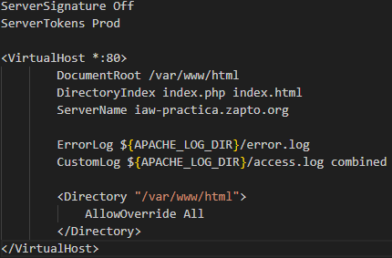
[!IMPORTANT]
Cómo hemos podido observar anteriormente, tenemos una carpeta en nuestra estructura llamada "inventory", esta carpeta incluye las direcciones IPs de las máquinas a controlar (frontend y backend), usuario de ansible así cómo la clave a usar para la conexión con las mismas. Cabe recordar tras adjuntar al repo la clave, ejecutar el comando "chmod 400 vockey.pem" para que no de problemas la conexión y tenga los permisos necesarios
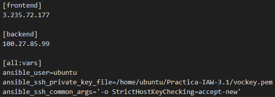
También tenemos un archivo llamado "main.yaml", dónde le especificamos a Ansible los archivos que deseamos ejecutar sobre los dispositivos a manejar.
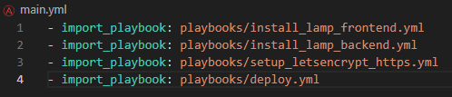
Variables incluidas en el archivo ".envars"
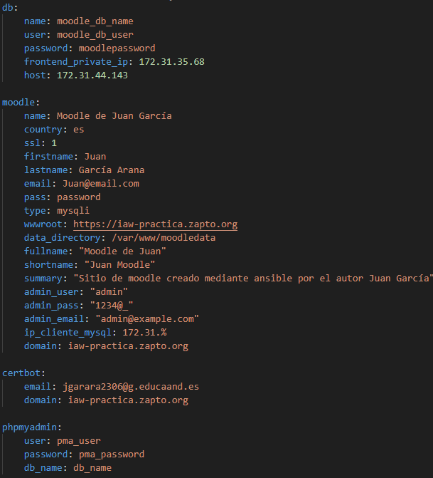
Comprobaciones generales
Una vez redactados los comandos útiles, probaremos la ejecución del script de modo que se ejecute sin errores.
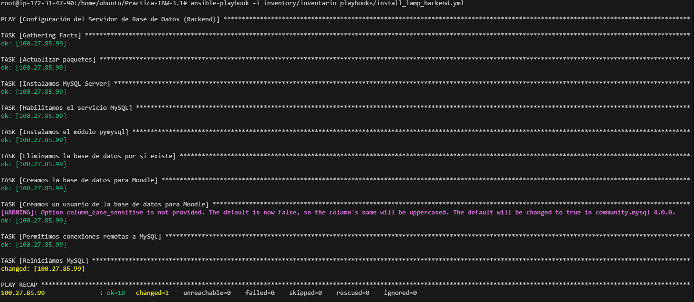
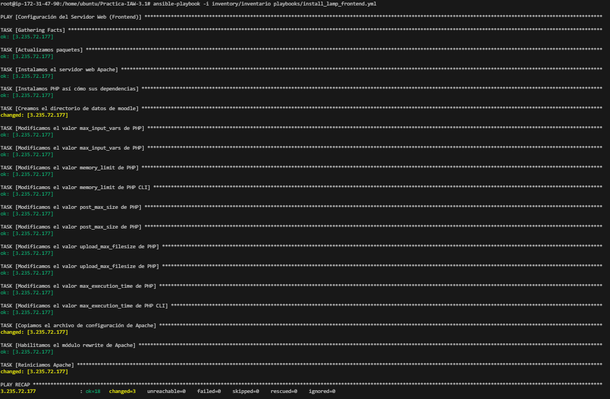
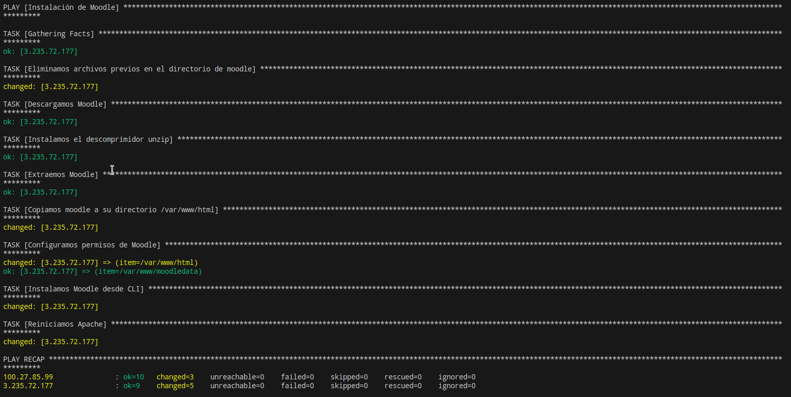
Y para finalizar, ejecutaremos el archivo "setup letsencrypt"
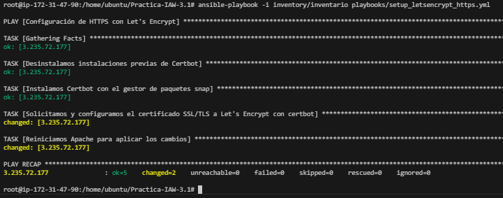
Sitio Moodle
Una vez ejecutado todos los scripts con éxito, introduciremos el nombre de nuestro dominio y cargará la página de nuestro sitio moodle funcionando
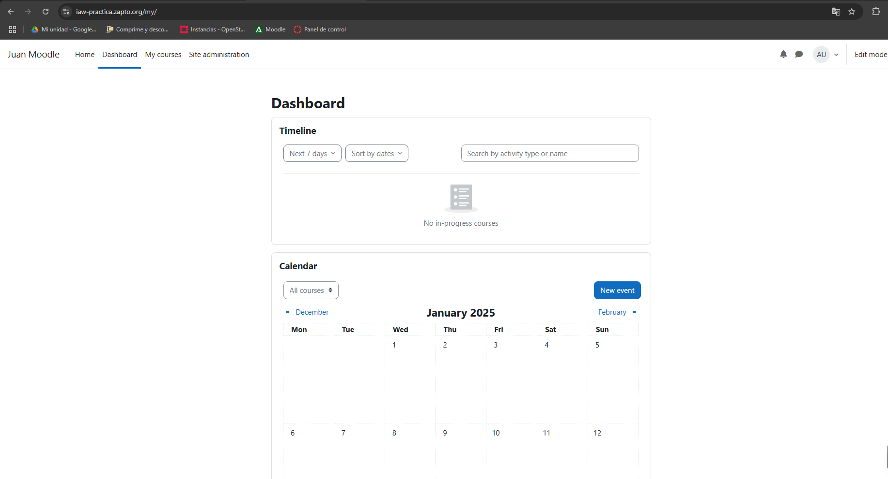
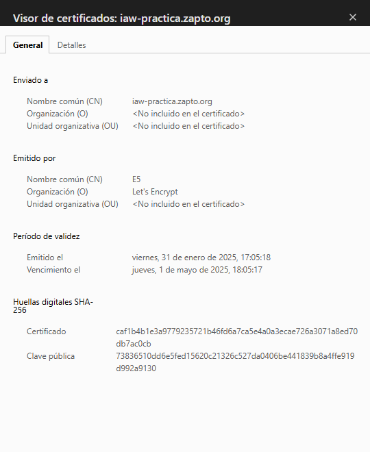